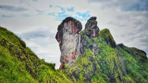

KOTTAYAM
Kottayam (കോട്ടയം) is a city in the Indian state of Kerala.
Kottayam literally means the interior of a fort—Kotta + Akam.Flanked by the Western Ghats on the east and the Vembanad Lake and paddy fields of Kuttanad on the west, Kottayam is a place that is known for extraordinary qualities.
It is the district headquarters of Kottayam district, located in south-west Kerala. Kottayam is located in the basin of the Meenachil River at an average elevation of 3 metres (9.8 ft) above sea level, and has a moderate climate.
It is located 150 kilometres (93 mi) north of the state capital Thiruvananthapuram.
Established- 1 July 1949
Region- Central Travancore
Area- 2,208 km2 (853 sq mi)
Population- Total-1,974,551,Density-890/km2 (2,300/sq mi)
Established- 1 July 1949
Region- Central Travancore
Area- 2,208 km2 (853 sq mi)
Population- Total-1,974,551,Density-890/km2 (2,300/sq mi)
Tourist Spots
Kumarakom Kumarakom is a popular tourism destination located near the city of Kottayam (16 kilometres (10 mi)), in Kerala, India, famous for its backwater tourism. It is set in the backdrop of the Vembanad Lake, the largest lake in the state of Kerala. |
Illickal Kallu Illikkal Kallu is a monolith located on top of the Illickal Malaa in the Kottayam district of Kerala, India.The distance from kottayam railway station to illikal kallu is 57km. Situated at around 3400 feet above sea level, Illickal Kallu is a major tourist attraction in Moonnilavu and Thalanadu village of Meenachil taluk. |